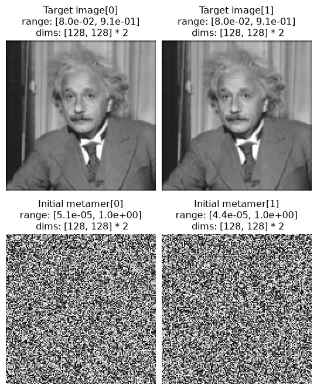
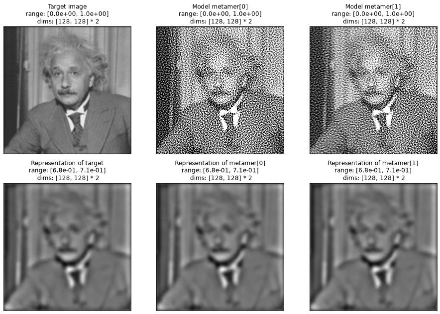
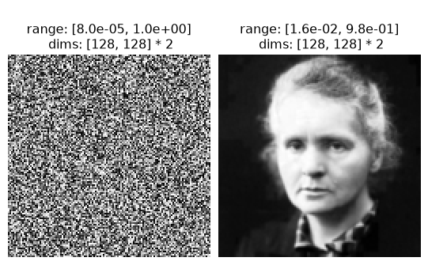
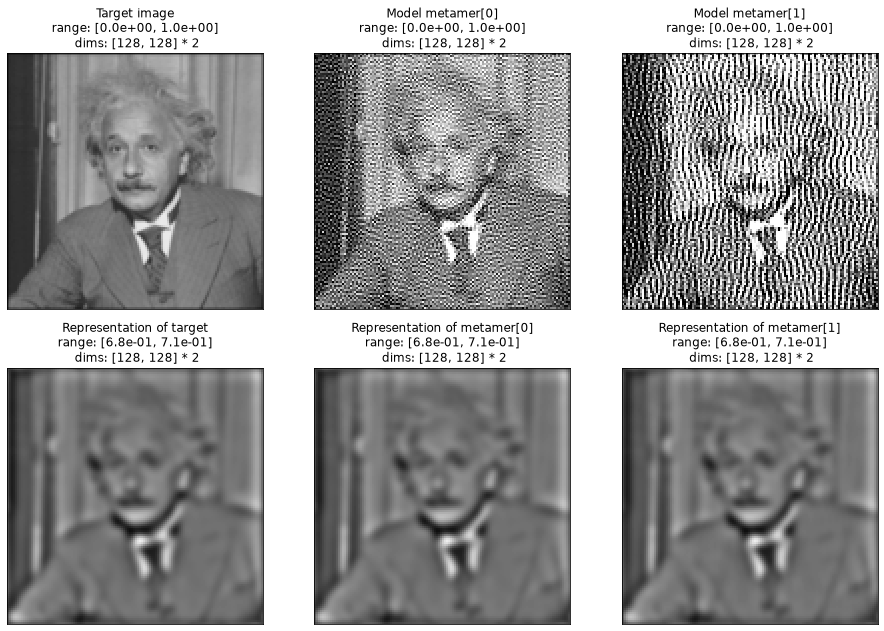
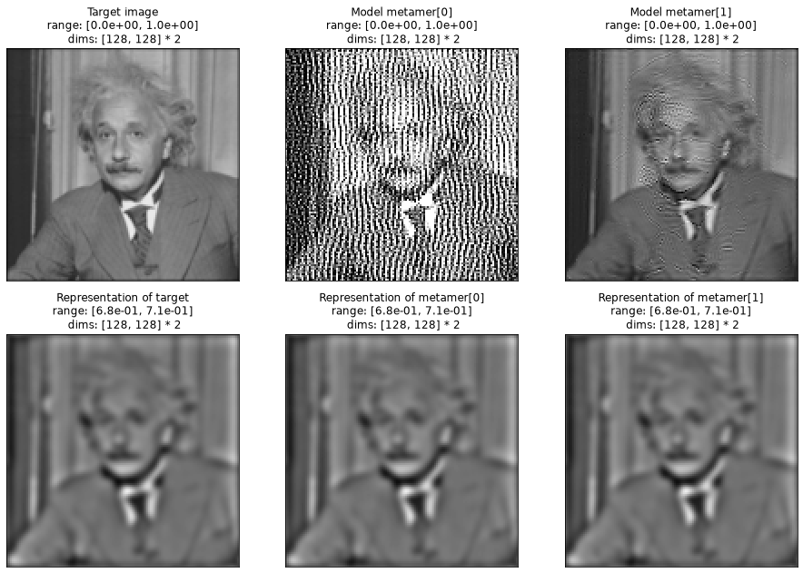
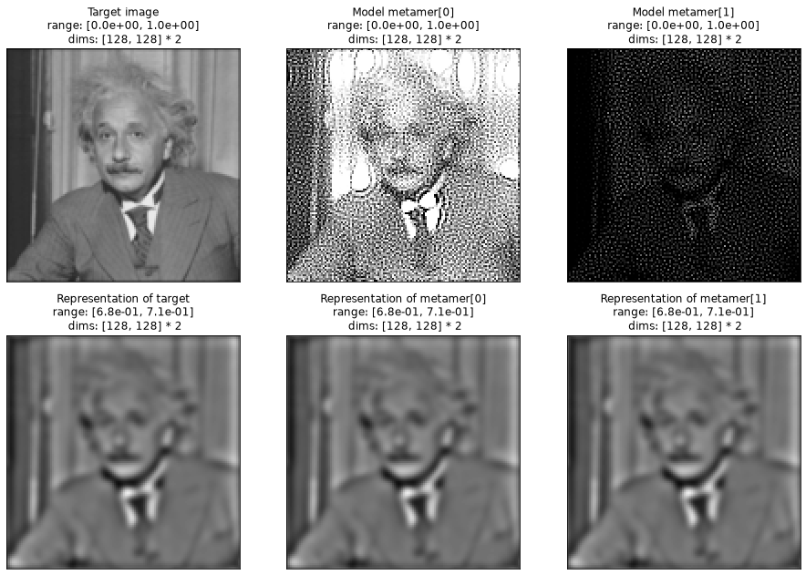
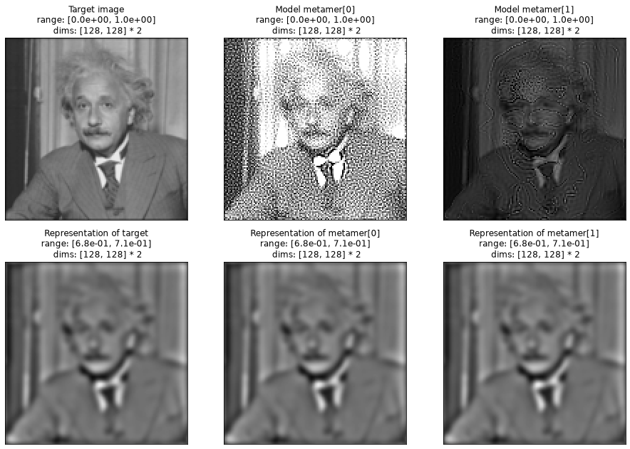
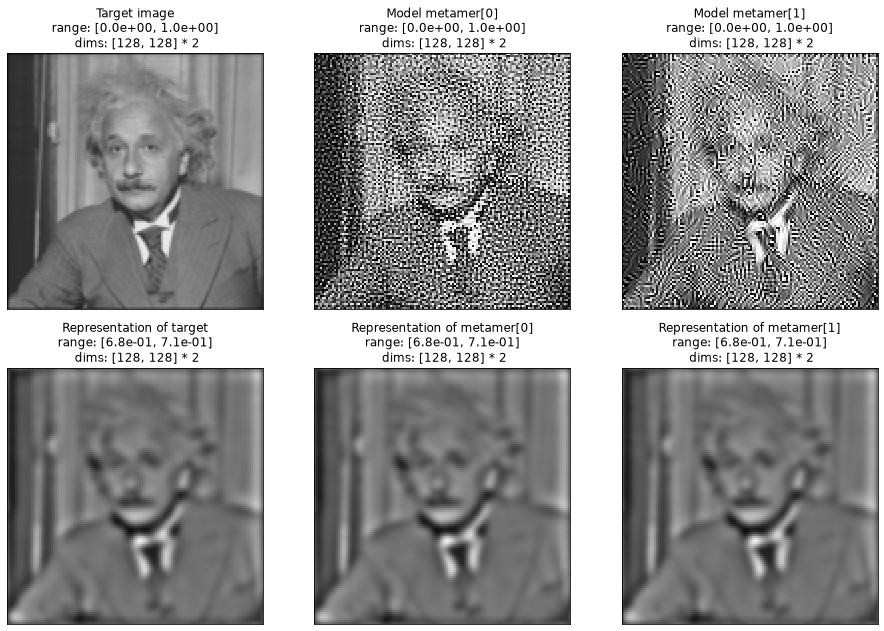
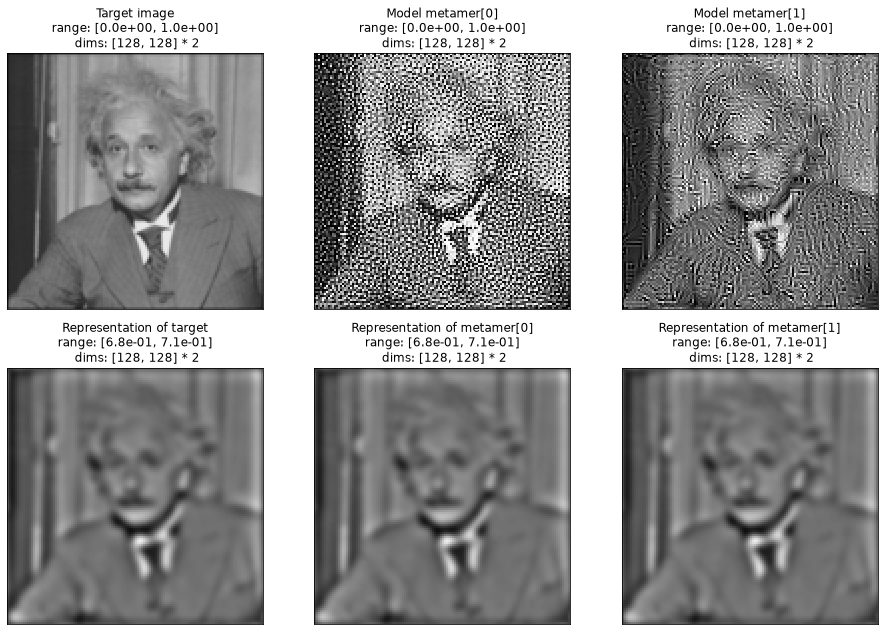

Run this notebook yourself!
Download the executed notebook: penalty_visual_diversity.ipynb!
Run it in your browser: penalty_visual_diversity.ipynb!
Using penalties to incentivize visual diversity#
How to use custom penalty functions showed the basics of working with custom penalty functions, but their flexibility allows for us to bias stimulus synthesis in a wide variety of different ways. In this notebook, we will show how they can be used to increase perceptual diversity among metamers for the LuminanceGainControl model. We will also demonstrate how changing the initial image used for synthesis affects the resulting metamers, and how these two effects interact.
import matplotlib as mpl
import matplotlib.pyplot as plt
import torch
import plenoptic as po
# so that relative sizes of axes created by po.plot.imshow and others look right
plt.rcParams["figure.dpi"] = 72
# We will not run synthesis in this notebook, instead loading cached results
cached_metamers = po.data.fetch_data("visual_diversity_penalty.tar.gz")
Downloading file 'visual_diversity_penalty.tar.gz' from 'https://osf.io/download/j53pc/?revision=10' to '/home/jenkins/agent/workspace/CCN_neurorse_plenoptic_PR-501/.cache/plenoptic'.
Untarring contents of '/home/jenkins/agent/workspace/CCN_neurorse_plenoptic_PR-501/.cache/plenoptic/visual_diversity_penalty.tar.gz' to '/home/jenkins/agent/workspace/CCN_neurorse_plenoptic_PR-501/.cache/plenoptic/visual_diversity_penalty.tar.gz.untar'
This notebook retrieves cached synthesis results / Reproducibility
Instead of performing synthesis in this notebook, we have cached the result of most of these syntheses online and download them for display.
This notebook contains collapsible admonitions which contain the steps necessary to run synthesis yourself after each call to load. If you have a GPU available, the only synthesis calls that take longer than a minute are those which use DISTS, in the final section (if you do not have a GPU, they will all take longer).
If you wish to exactly reproduce our results, you will also need to do the following:
Call
torch.use_deterministic_algorithms(True). This only needs to be done once.Set the seed to 0:
po.set_seed(0). The seed only affects the initialization of the metamer attribute as a patch of noise. It should thus be done either before the call totorch.rand_likein the creation ofinit_imgandinit_img_curie, as we show below.
See Best Practices for more details.
The following hidden cells defines a function we’ll use to visualize our metamer synthesis results, expand it for more details.
Metamer synthesis without custom penalty#
Throughout this notebook, we’ll use the LuminanceGainControl model, which convolves its input with a center-surround filter, applies gain control / divisive normalization, and then rectifies the output. Thus, the model is sensitive only to mid-range frequencies and is insensitive to absolute pixel values.
model = po.models.LuminanceGainControl(
31, pretrained=True, pad_mode="circular", cache_filt=True
).eval()
po.remove_grad(model)
model.to(torch.float64)
LuminanceGainControl(
(center_surround): CenterSurround()
(luminance): Gaussian()
)
Before we start writing custom penalties, let’s see what the default behavior is. By default, Metamer uses plenoptic.regularize.penalize_range as the penalty function (to keep the metamer image’s pixel values between 0 and 1). This function does nothing to encourage multiple metamers to be different (or similar) to each other, so let’s see how synthesis behaves when we use it!
Below, we create our target image, img. We start with a picture of Einstein and downsample it by a factor of 2 (this makes the high-frequency patterns generated in much of the following examples more obvious). We then repeat it along the batch dimension. Because LuminanceGainControl (like the other models in plenoptic) operates on each batch dimension independently, this allows us to synthesize two independent metamer images simultaneously.
img = po.data.einstein().to(torch.float64)
img = po.process.blur_downsample(img)
img = img.repeat(2, 1, 1, 1)
# Test that our model independently operates on these images
test_imgs = torch.cat([po.data.einstein(), po.data.curie()])
test_imgs = test_imgs.to(torch.float64)
rep = model(test_imgs)
print(f"Input shape: {test_imgs.shape}")
print(f"Output shape: {rep.shape}")
assert (rep[0] == model(test_imgs[0])).all()
assert (rep[1] == model(test_imgs[1])).all()
Input shape: torch.Size([2, 1, 256, 256])
Output shape: torch.Size([2, 1, 256, 256])
By default, Metamer initializes synthesis with independent samples of white noise. For this notebook, we’ll create this initialization image explicitly so we can visualize it, but note that this is the same as the default behavior.
po.set_seed(0)
init_img = torch.rand_like(img)
title = [
"Target image[0]",
"Target image[1]",
"Initial metamer[0]",
"Initial metamer[1]",
]
po.plot.imshow([img, init_img], col_wrap=2, zoom=2, title=title);

In the figure above, we can see our target and initial images. Over the course of synthesis, plenoptic will update the pixels of the bottom image in each column so that the model representation matches that of the top.
The two images in the top row are identical, but the two in the bottom are not! Humans aren’t very sensitive to the differences between independent samples of noise at this resolution, so they look pretty similar (I have to focus pretty hard in specific locations in order to find the differences). But in fact, on a pixel-by-pixel basis, these two initial images are more different from each other than they are from the target, which we can see by computing the mean-squared error:
init_diff = po.loss.mse(init_img[0], init_img[1])
print(f"MSE between indepedendent noise samples: {init_diff}")
img_diff = po.loss.mse(init_img[0], img[0])
print(f"MSE between Einstein image and noise: {img_diff}")
MSE between indepedendent noise samples: 0.1674598395760851
MSE between Einstein image and noise: 0.10514815534750115
Okay, with all that out of the way, let’s initialize our Metamer object using our target image and model. We will also set the loss function to plenoptic.loss.l2_norm (rather than the default, plenoptic.loss.mse), which improves the quality of our resulting metamer. We then load in and visualize the results of this synthesis:
met_basic = po.Metamer(img, model, po.loss.l2_norm)
met_basic.load(cached_metamers / "vis_div_penalty_basic.pt", map_location="cpu")
create_metamer_figure(met_basic);

How to run this synthesis manually
met_basic.setup(initial_image=init_img)
met_basic.synthesize(1000, stop_criterion=1e-16)
In the above figure, we can see the target image in the first column, followed by the two independent metamer images. The second row shows the model representation of each image in the top row, and you can see that they’re all identical – that is, metamer synthesis has succeeded and we’ve found two new metamers. The metamers both look like the target image of Einstein, except with lots of high frequency noise added and, if you look carefully, the finer details (e.g., in his hair) removed. Additionally, the image looks a little brighter (that is, the average pixel values are a little higher).
However, those two metamers look really perceptually similar! Again, they’re not actually that similar on a pixel-by-pixel basis, as we can clarify by computing the mean-squared error between them:
met_diff = po.loss.mse(met_basic.metamer[0], met_basic.metamer[1])
print(f"MSE between metamers: {met_diff}")
MSE between metamers: 0.09708081576801837
But they do look really similar. This leads to the question: do all metamers for this model look like this? Or is this a result of our optimization procedure and the choices we made?
Changing the initialization point#
One simple way to try to find more visually-diverse metamers is to change the image used to initialize the synthesis procedure, as done by Broderick et al., 2025. In plenoptic, we can do that by creating an appropriately-shaped tensor and passing it to plenoptic.Metamer.setup (as seen in the dropdown below). Let’s create an initial image tensor that contains one sample of white noise and a picture of Marie Curie:
po.set_seed(0)
curie = po.process.blur_downsample(po.data.curie())
white_noise = torch.rand_like(curie)
init_img_curie = torch.cat([white_noise, curie])
po.plot.imshow(init_img_curie, zoom=2);

By changing where metamer synthesis starts, we affect where it ends up. That’s because metamer synthesis is a high-dimensional non-convex optimization problem, the solutions of which are often dependent upon their initialization. There is (likely) a huge set of potential metamers for any given model, and so we’re hoping that by choosing two starting points which appear very different, that our final metamers will also appear more distinct. As above, we initialize the Metamer object with the same target image, model, and loss, and then load and visualize our cached results:
met_curie = po.Metamer(img, model, po.loss.l2_norm)
met_curie.load(cached_metamers / "vis_div_penalty_basic_curie.pt", map_location="cpu")
create_metamer_figure(met_curie);
How to run this synthesis manually
met_curie.setup(initial_image=init_img_curie)
met_curie.synthesize(1000, stop_criterion=1e-16)
The figure above has the same layout as before. As before, we can see that all three images in the bottom row are identical, and thus the three images in the top row are all metamers. The first metamer, in the second column, looks the same as the result from the default metamer synthesis: the target with high-frequency noise. The second, however, looks fairly different: it looks like a slightly blurred version of the target image with a faint outline of Marie Curie’s face living in the highest frequencies, and the overall image looks a little darker than the target. All of those features are a result of our initialization: the initial image was dark everywhere except for the center and metamer synthesis has preserved the highest frequencies found in the initial image. In the first metamer, those preserved high frequencies show up as the noise pattern, and in the second, as the outline of Curie’s face.
While this setting of the initialization to find visually different metamers works, let’s see what we can accomplish if we choose the penalty_function to find more visually distinct metamers. Doing so is akin to shrinking the space of possible metamer images, and can be done in tandem with setting the initial image.
Using penalty_function to find visually distinct metamers#
In this section, we will create custom penalty functions to encourage our two simultaneously-synthesized metamers to be more perceptually different from each other. The question is “what do we mean by ‘perceptually different’?” Here, we’ll show three examples from two different types of penalties. We will first show that we can use SteerablePyramidFreq to compute the average spectral energy across orientation and spatial frequency bands and use these numbers to encourage the spatial frequency content to be different in some subset of the bands. We’ll do this first for vertical orientations across all frequencies, and then for low frequencies across all orientations. Finally, we’ll show that we can set up a penalty that maximizes an image quality metric, DISTS (Ding et al., 2020), to encourage the two metamers to be as different as possible according to that metric. For each of these examples, we’ll demonstrate the results with the default and Marie Curie initializations, as above, so we can see how the initialization interacts with the penalty function.
Note that we are not claiming that our choices here are “the best” in any way — you are encouraged to try tweaking the spectral energy penalty, try out different image quality metrics, or develop your own completely novel penalties! If you find something interesting, please let us know!
Encourage different energy spectral density#
Looking at the metamers synthesized from the white noise initialization at the top of this notebook, we can see that both are dominated by high frequencies present in the initial images. This suggests that one effective way to make them appear different from each other would be to encourage their energy spectral density to differ, so that their spatial frequency content is as different as possible.
To do so, we will write two helper functions:
spyr_energyusesSteerablePyramidFreqto compute the average energy in different spatial frequency / orientation bands, represented as a tensor of shape(batch, bands).construct_maskreturns a boolean mask tensor of the same shape; itsTruevalues define the bands we will use to compute the penalty value. It accepts a string determining what mask to use, and currently only accepts"low"or"vertical", the two examples shown here. Feel free to modify it to accept other values!
pyr = po.process.SteerablePyramidFreq(img.shape[-2:], is_complex=True)
pyr.to(img.dtype)
def spyr_energy(x):
if not isinstance(x, dict):
x = pyr(x)
# Compute the average energy in each steerable pyramid band
energy = [v.abs().mean(dim=(-2, -1)) for v in x.values()]
# concatenate into a single vector
energy = torch.cat([p.flatten(1, -1) for p in energy], 1)
return energy
def construct_mask(x, include):
# get dictionary of coefficients
mask = pyr(x)
if "low" in include:
# zero out high frequencies, all orientations
for scale in ["residual_highpass", 0, 1, 2]:
mask[scale] = torch.zeros_like(mask[scale])
elif "vertical" in include:
# zero out all non-vertical orientations, all frequencies
for scale in mask:
if scale in ["residual_highpass", "residual_lowpass"]:
mask[scale] = torch.zeros_like(mask[scale])
else:
mask[scale][:, :, 1:] = 0
# compute to tensor and then a boolean
return spyr_energy(mask).to(bool)
Different vertical energy#
Now let’s use the above functions to define a penalty to encourage the vertically-oriented energy to be different between the two images. In the following:
we compute a mask to select only the vertical bands
we compute the squared difference in the mask-selected bands across the two images
we convert this difference (a non-negative value we want to maximize) to a penalty (a value bounded between 0 and 1 that we want to minimize) by passing this value to
torch.exp(-x)(as explained in Designing a well-behaved penalty function)we combine this penalty with the default range penalty
# Compute vertical mask
mask = construct_mask(img, "vertical")
# Compute average energy of target image, to normalize. this is useful because the
# steerable pyramid coefficients have different magnitudes across scales and we want
# each band to have approximately the same contribution
target_energy = spyr_energy(img)
def steerpyr_penalty(x, mask, target_energy):
# compute the average energy in each band of our synthesized images
penalty = spyr_energy(x)
# normalize that by the target energy and use the mask to select only the bands we
# care about
penalty = mask * (penalty / target_energy)
# Compute the average squared difference in energy between the two synthesized
# images
penalty = torch.mean(penalty.diff(dim=0).pow(2))
# Convert this distance to a penalty by using torch.exp(-x)
penalty = torch.exp(-penalty)
# Add this to range penalty
return po.regularize.penalize_range(x) + penalty
# We don't want to compute the mask and target energy in the penalty function itself,
# since they are the same across all of synthesis
def vertical_penalty(x):
return steerpyr_penalty(x, mask, target_energy)
There are a couple of tricks in the above code to note:
We normalize the metamers’ spectral energy by that of the target image (
target_energy). This is because the magnitude of the steerable pyramid coefficients vary across spatial frequency bands, and we want each to have roughly the same impact on the penalty.We care about efficiency, so we compute
maskandtarget_energyin advance. That way, whenvertical_penaltyis called on each iteration of synthesis, it needs to compute as little as possible.
We now have a penalty function which accepts a single tensor and returns a scalar. We can see that it is encouraging proper behavior by comparing its values on the two sets of metamers we have already computed:
basic_penalty = vertical_penalty(met_basic.metamer).item()
print(f"Penalty on noise-init metamer pair: {basic_penalty}")
curie_penalty = vertical_penalty(met_curie.metamer).item()
print(f"Penalty on noise/curie-init metamer pair: {curie_penalty}")
Penalty on noise-init metamer pair: 0.999917736628498
Penalty on noise/curie-init metamer pair: 0.7989947569765229
As we can see, it returns a higher value for the pair whose images were both initialized by noise than the other. While two images initialized with noise will have very different mean-squared error, they will have roughly comparable spectral energy, which is quite different from that of natural images — that’s the rationale for this penalty!
Okay, let’s see what the effect of using this penalty is on the synthesized metamers. The call to setup and synthesize are the same as in our default behavior, the only difference is that we set penalty_function and penalty_lambda in the initialization:
met = po.Metamer(
img,
model,
po.loss.l2_norm,
penalty_function=vertical_penalty,
penalty_lambda=0.1,
)
met.load(cached_metamers / "vis_div_penalty_vertical.pt", map_location="cpu")
create_metamer_figure(met);

How to run this synthesis manually
met.setup(initial_image=init_img)
met.synthesize(1000, stop_criterion=1e-16)
The figure above has the same layout as before, and we can see that all three images in the bottom row are identical, and thus the three images in the top row are all metamers. These two metamers look quite different, both from each other and from the previous ones we’ve synthesized. Here, the high frequencies in the second metamer appear more pronounced than in the first, and are concentrated vertically, while the high frequencies appear slightly muted in the first metamer.
We can do the exact same thing while initializing with the image of Marie Curie:
met = po.Metamer(
img,
model,
po.loss.l2_norm,
penalty_function=vertical_penalty,
penalty_lambda=0.1,
)
met.load(cached_metamers / "vis_div_penalty_vertical_curie.pt", map_location="cpu")
create_metamer_figure(met);

How to run this synthesis manually
met.setup(initial_image=init_img_curie)
met.synthesize(1000, stop_criterion=1e-16)
Here, the two effects we’ve seen so far seem to both be present. The first metamer looks like the “vertical” metamer initializing with noise, while the second looks like the Curie-initialized metamer with the default penalty. As mentioned above, this Curie-intialized metamer already has fairly distinct spectral energy from the noise-initialized one, and exaggerating the vertical power in the first metamer has increased this effect.
Different low frequency energy#
We can do the same thing using a different mask which selects the low frequency bands across all orientations:
# Compute low frequency mask
mask = construct_mask(img, "low")
# This is the same as vertical_penalty, we're just using a different mask
def low_penalty(x):
return steerpyr_penalty(x, mask, target_energy)
Let’s use this penalty to synthesize some metamers. For this synthesis, in order to successfully find metamers, we need to lower penalty_lambda slightly and run synthesis for a longer time:
met = po.Metamer(
img,
model,
po.loss.l2_norm,
penalty_function=low_penalty,
penalty_lambda=0.07,
)
met.load(cached_metamers / "vis_div_penalty_low.pt", map_location="cpu")
create_metamer_figure(met);

How to run this synthesis manually
met.setup(initial_image=init_img)
met.synthesize(3000, stop_criterion=1e-16)
The above figure has the same layout as before, and we again see that the images in the bottom row are identical, so those in the top are all model metamers. Unlike the previous examples we’ve seen, neither of the resulting metamers look like those that result from the default settings. Instead, the results here are exploiting the fact that LuminanceGainControl is insensitive to the absolute pixel values and so the two metamers have very different apparent brightness levels (this information is captured in the residual lowpass of SteerablePyramidFreq, which is included in the mask used for this penalty). The first, brighter metamer also appears to have a faint two cycles per image horizontal grating on top of it (you may have to squint and move away from your screen to see it), though this is much less salient than the brightness difference.
We can again use this same penalty when initializing metamer synthesis with the noise / Marie Curie pair. Successful metamer synthesis requires lowering penalty_lambda still further:
met = po.Metamer(
img,
model,
po.loss.l2_norm,
penalty_function=low_penalty,
penalty_lambda=0.05,
)
met.load(cached_metamers / "vis_div_penalty_low_curie.pt", map_location="cpu")
create_metamer_figure(met);

How to run this synthesis manually
met.setup(initial_image=init_img_curie)
met.synthesize(3000, stop_criterion=1e-16)
The resulting metamer pair looks similar to the noise-initialized one with the same penalty. However, comparing the darker image to the one from the earlier pair highlights an interesting feature: this synthesis setup still results in metamers whose high frequencies are largely inherited from their initialization, unlike those resulting from vertical_penalty: the darker metamer in this pair still appears to have the faint outline of Marie Curie’s face, as we’ve seen in the other Curie-initialized metamers in this notebook, while the darker metamer in the noise-initialized pair has the salt-and-pepper high frequency pattern seen in the other noise-initialized metamers.
In this example, since neither the LuminanceGainControl model nor low_penalty are sensitive to high frequencies, the patterns in those frequencies are still largely due to their initialization.
Maximize an image quality metric#
pyiqa
pyiqa must be installed in your environment to run the rest of this notebook: run pip install pyiqa (or the equivalent) in your virtual environment.
In the previous section, we created our penalty by looking at the model metamers and reasoning through visual properties we thought could be used to separate them.
An alternative approach is to look for existing functions which take in pairs of images and return a measure of their perceptual distance, i.e., how different humans consider them to be. One source for these functions is the field of Image Quality Assessment (IQA), which (among other things) develops Full-Reference methods that meet this description.
Several of the metrics included in plenoptic’s Metrics module (e.g., plenoptic.metric.ssim) come from this field, but we can also make use of the separate package pyiqa, which contains plenoptic-compatible pytorch implementations of a variety of IQA methods!
Warning
IQA is largely concerned with whether image capturing, processing, storage, etc. methods (such as compression) leads to perceptually noticeable distortions in the resulting image. Their methods have thus largely been developed with the assumption that one of the two images being compared is a “clean” / unaltered image and the other is some distorted version of the clean image.
There is thus a chance that such functions will lead to nonsensical results on two completely unrelated images (as is common in plenoptic), so be careful!
Here, we’ll make use of DISTS (Ding et al., 2020), a full-reference IQA model which combines aspect of texture and structure similarity. We grab the metric object from pyiqa and then create a penalty function making use of it.
import pyiqa
# after this call, metric is a torch Module (similar to plenoptic's models), and so we
# treat it as such. See pyiqa documentation for more details.
metric = pyiqa.create_metric("dists", device=img.device, as_loss=True)
po.remove_grad(metric)
metric.to(img.dtype)
def dists(x):
# the metric object accepts two 4d tensors; this is equivalent to
# metric(x[0].unsqueeze(0), x[-1].unsqueeze(0)), to ensure that we convert one
# tensor of shape (2, c, h, w) to two tensors of shape (1, c, h, w)
return metric(x[:1], x[-1:])
def dists_penalty(x):
return po.regularize.penalize_range(x) + torch.exp(-dists(x))
Downloading: "https://huggingface.co/chaofengc/IQA-PyTorch-Weights/resolve/main/DISTS_weights-f5e65c96.pth" to /home/jenkins/agent/workspace/CCN_neurorse_plenoptic_PR-501/.cache/torch/hub/pyiqa/DISTS_weights-f5e65c96.pth
0%| | 0.00/12.0k [00:00<?, ?B/s]
100%|██████████| 12.0k/12.0k [00:00<00:00, 18.2MB/s]
Loading pretrained model DISTS from /home/jenkins/agent/workspace/CCN_neurorse_plenoptic_PR-501/.cache/torch/hub/pyiqa/DISTS_weights-f5e65c96.pth
Note that, as with our earlier penalty, we use the same torch.exp(-x) trick to convert a distance (a non-negative value we wish to maximize) into a penalty (a value bounded between 0 and 1 that we wish to minimize).
This metamer synthesis is slightly more difficult and requires a multi-stage synthesis, where we first synthesize the metamer pair without a custom penalty and then use that as a starting point for a second synthesis using dists_penalty (expand the dropdown below to see this all written out).
met_penalty = po.Metamer(
img,
model,
po.loss.l2_norm,
penalty_function=dists_penalty,
penalty_lambda=0.5,
)
met_penalty.load(cached_metamers / "vis_div_penalty_dists.pt", map_location="cpu")
create_metamer_figure(met_penalty);

How to run this synthesis manually
met = po.Metamer(img, lg_model, po.loss.l2_norm)
met.setup(initial_image=init_img)
met.synthesize(500, stop_criterion=1e-16)
met_penalty = po.Metamer(
img,
lg_model,
po.loss.l2_norm,
penalty_function=dists_penalty,
penalty_lambda=0.5,
)
met_penalty.setup(initial_image=met.metamer, optimizer_kwargs={"lr": 0.03})
met_penalty.synthesize(500, stop_criterion=1e-16)
The above figure has the same layout as before, and we again see that the images in the bottom row are identical, so those in the top are all model metamers. The first metamer looks the same as the ones resulting from default behavior, but the high frequencies in the second metamer have been organized into some sort of pattern, with longer straight and curved contours visible.
We can use this same penalty when we initialize metamer synthesis from the noise/Curie-initialized pair, which uses the same multi-stage procedure as the noise-initialized pair:
met_penalty = po.Metamer(
img,
model,
po.loss.l2_norm,
penalty_function=dists_penalty,
penalty_lambda=0.5,
)
met_penalty.load(cached_metamers / "vis_div_penalty_dists_curie.pt", map_location="cpu")
create_metamer_figure(met_penalty);

How to run this synthesis manually
met = po.Metamer(img, lg_model, po.loss.l2_norm)
met.setup(initial_image=init_img_curie)
met.synthesize(500, stop_criterion=1e-16)
met_penalty = po.Metamer(
img,
lg_model,
po.loss.l2_norm,
penalty_function=dists_penalty,
penalty_lambda=0.5,
)
met_penalty.setup(initial_image=met.metamer, optimizer_kwargs={"lr": 0.03})
met_penalty.synthesize(500, stop_criterion=1e-16)
Initialization has a much smaller effect on the appearance of this metamer pair than in our previous examples: the second metamer appears to be darker than in the noise-initialized pair, and if I refer back to original image of Marie Curie’s face, I can convince myself that some of the curved contours around Einstein’s face are the result of this initialization, but the effect is much less obvious.
Conclusion#
In this notebook, we’ve walked through how we can write custom penalty functions or make use of existing IQA methods in order to incentive pairs of metamers to be more visually distinctive from each other. We have also shown how a similar goal can be achieved by changing synthesis initialization, and how these two factors interact.